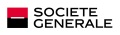
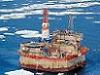
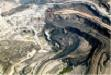
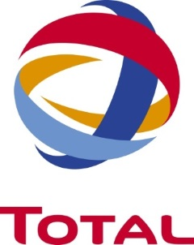
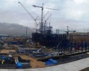
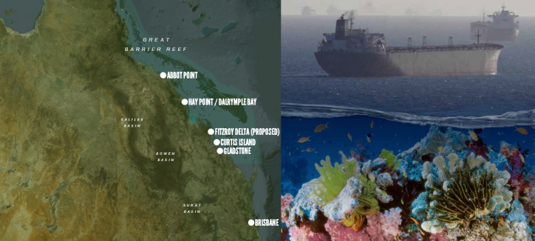
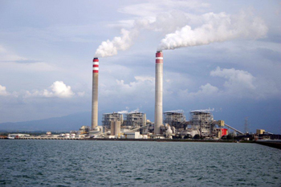
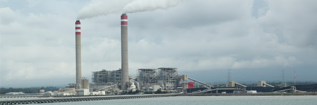

Société Générale - Crédit du Nord - Boursorama
Description
Société Générale est l'une des plus grandes banques européennes, avec des activités aux quatre coins du monde. Ces actiivités se concentrent autour de trois grands métiers : Réseaux de détail, financements spécialisés & assurances ; Banque privée, gestion d'actifs et services aux investisseurs ; Banque de financement et d'investissement.
Font partie du réseau de banque de détail de la Société Générale les agences de la Société Générale mais aussi le Crédit du Nord et Boursorama. La Société Générale détient en effet 75% des actions de la banque en ligne et entend bien renforcer sa présence sur internet.
Appréciation générale
De par ses activités de Banque de Financement et d'Investissement à travers le monde, la Société Générale a un impact massif sur l'environnement.
Bien qu'ayant adopté des politiques sectorielles sur les secteurs à risques tels que les énergies fossiles, les grands barrages ou les agrocarburants, on la retrouve impliquée dans de très nombreux projets controversés.
Pour prendre un exemple marquant, elle a ainsi été impliquée dans l'énorme projet de mine de charbon Alpha Coal en Australie, projet qui ouvrirait la voie à l'ouverture d'un nouveau bassin de charbon, véritable bombe climatique puisqu'il nous faut laisser plus de 80% du charbon dans le sol pour limiter le réchauffement du globe en dessous de 2°C. Et malgré le fait que les potentiels impacts du projet sur la Grande Barrière de corail mais aussi sur les populations et le climat étaient en contradiction majeure avec les politiques de la banque, il aura fallu plus d'un an de mobilisation pour qu'elle se retire du projet.
Et si en novembre 2015, Société Générale adoptait des mesures de réduction de ses soutiens au charbon et disait vouloir aligner ces financements avec un scénario +2°C, elle accordait un prêt un mois plus tard à une centrale à charbon en République dominicaine, et envisage aujourd'hui de soutenir le projet de centrale à charbon Tanjung Jati B - TBJ2 en Indonésie.
La route est donc encore longue avant que l'environnement et les populations passent avant les affaires à la Société Générale.
| Niveau | Commentaires | |
|---|---|---|
| Environnement |  |
La Société Générale ne prend en considération l'environnement qu'à la marge, n'excluant de ses soutiens que les pires pratiques des activités qui violent le droit de tou-te-s à un environnement sain. |
| Climat |  |
La Société Générale dit vouloir aligner ses activités avec un scénario +2°C mais continue pourtant de financer des activités incompatibles avec cette objectif, à commencer par le secteur du charbon. |
| Transparence | |
Contrairement à la Nef, la Société Générale n'offre aucune transparence dans ses activités. |
| Politiques sectorielles | La Société Générale a adopté dix politiques sectorielles de réduction des risques dans le cadre de ses financements et de ses investissements dans les secteurs à risque les énergies fossiles, le nucléaire ou encore l'huile de palme. Très partielles et insuffisantes, ces politiques n'empêchent pas la banque de continuer à financer des projets et entreprises très controversées dans ces secteurs. Leur plus, être publiques et accessibles. | |
| Energies renouvelables | |
La Société Générale a financé pour 4 milliards d'euros les énergies renouvelables entre 2009 et 2014, soit 7 fois moins que ses financements aux énergies fossiles. |
| Paradis fiscaux | |
Le groupe Société Générale possède 136 filiales dans les paradis fiscaux et judiciaires. |
| Energies fossiles - charbon | |
La Société Générale a soutenu le secteur des énergies fossiles à hauteur de 32 milliards d'euros entre 2009 et 2014, dont 8 milliards au charbon. |
| Emissions financées | |
La Société Générale ne calcule pas les émissions de CO2 induites par ses activités de financement et d'investissement. Les Amis de la Terre ont estimé ces émissions à plus de 634 millions de tonnes d'équivalent CO2 en 2010 |
 Liste noire des projets controversés financés Liste noire des projets controversés financés
|
||
| Nom | Photo | Description |
| Nucléaire |  |
Filière nucléaire. Celle-ci va de l'extraction de l'uranium (par exemple dans les mines du Niger) au retraitement des déchets nucléaires, en passant par l'exploitation de centrales nucléaires et la production d'armes nucléaires. source - |
| Projet pétrolier et gazier de Sakhaline II (Russie) |  | Menace sur la biodiversité : 130 dernières baleines grises occidentales dans la zone en voie d'extinction. Risque de marée noire. Violation de la loi environnementale russe en 2005 lors du rejet massif de déchets dans la baie d'Aniva. En savoir plus |
| Sables bitumineux (Canada) |  | Entreprises comme Suncor Energy ou Total exploitant les sables bitumineux extrêmement polluant. La production d'un baril de pétrole extrait des sables bitumineux génère trois fois plus de gaz à effet de serre que la production d'un barril classique. source |
| Gaz naturel liquéfié (Papouasie Nouvelle Guinée) | -63.jpg) |
Colossal projet industriel (extraction, transformation et gazoduc) qui vise l’exportation sur les marchés asiatiques : déplacements forcés des populations, violation des droits des communautés indigènes, conflits sociaux et délitement du tissu social, ce projet implique la déforestation massive de zones de conservation et est source d’une pollution dangereuse de l’air, de l’eau et de la terre |
| Centrales à charbon de Medupi et Kusile (Afrique du Sud) |  |
2 méga-centrales à charbon de 4800 MW chacune, qui nécessiteront l'ouverture de 40 nouvelles mines de charbon. Projets très polluants qui profiteront en premier lieu aux multinationales étrangères tournées vers l’exportation. Augmentation du prix de l'électricité pour la population. |
| Mines de Vedanta Resources |  |
Vedanta Resources est une entreprise minière (aluminium, cuivre, zinc, plomb), fortement présente en Inde, Zambie, Australie et Tanzanie. Très controversée en raison de son passif en matière violations de droits de l'homme et de dommages environnementaux, elle a été exclue du Fonds de pension norvégien, un des plus gros de la planète. Elle menace de nombreuses tribus, notamment celle des Dongria Kondh en Inde. |
| Producteurs de gaz de schiste |  | Entreprises productrices de gaz de schiste (Total, PGNiG, PKN Orlen) : usage de très grande quantité d'eau et de produits chimiques, pollution des nappes phréatiques et impacts sanitaires, risques sismiques. |
| Centrale à charbon de Tufanbeyli |  | Projet de centrale de lignite, un des charbon les plus sales et les plus émetteurs, qui causera la perte de 564 ans de vie par an en raison des morts prématurées, et des dizaines de milliers de maladies respiratoires tous les ans. La centrale sera alimentée par une mine qui sera développée sur 90% des terres agricoles dans une région dépendante de l'activité agricole. Le projet promet des violations de droits des populations, des pollutions environnementales et menace les zones protégées environnantes. |
| Terminaux portuaires d\'exportation de gaz et de charbon |  | Terminaux construits en face de la zone protégée de la Grande Barrière de corail inscrite au Patrimoine de l'Unesco. L'industrialisation de la côte menace les habitats critiques pour la survie de plusieurs espèces protégées comme les baleines à bosses et tortues migratrices. Elle nécessite le dragage de milliers de mètres cubes de fonds de mer qui, avec l'explosion du traffic maritime pour l'exportation du gaz et du charbon, menace la survie du plus grand récif corraillien au monde. |
| Centrale à charbon de Punta Catalina (République dominicaine) |  | Un projet de centrale à charbon incompatible avec les efforts de lutte contre le réchauffement climatique et qui menace la santé, l’accès à l’eau et les moyens de subsistance des populations. Ce projet nourrit aussi la corruption et les sources de conflits sociaux. Société Générale doit s'en retirer immédiatement. En savoir plus. |
| Projet de centrale de Tanjung Jati B en Indonésie |  | Plus de 1000 morts prématurées par an, une pollution de l'air et des ressources en eau dont dépendent l'activité de pêches des populations locales, une entreprise climaticide et qui violent ses propres engagements, voilà ce à quoi Crédit Agricole et Société Générale apporteraient leur soutien, après le retrait de BNP Paribas. En savoir plus. |
ATTENTION : Ces projets controversés ne constituent que quelques exemples de tous ceux connus des Amis de la Terre dans lesquels la Société Générale est impliquée. Vous pouvez ainsi en découvrir d'autres sur le site Secrets bancaires et consulter le profil de cette banque sur le site de BankTrack.
La Société Générale a également apporté son soutien à des projets controversés avortés du fait de la pression des ONG et des retraits des banques :
-> en juillet 2009, la Société Générale s'est retirée du projet de grand barrage d'Ilisu en Turquie qui a forcé le déplacement de plus de 55 000 personnes en majorité kurdes.
-> le projet de centrale nucléaire à Kaliningrad en Russie, soutenu par la Société Générale, a été abandoné en avril 2014 suite à la mobilisation des Amis de la Terre et de leur partenaire russe Ecodefense.
-> la Société Générale s'est retirée en décembre 2014 du projet charbon Alpha Coal en Australie. Nous lui demandons aujourd'hui de s'engager à ne pas financer aucun des projets charbon du bassin (mine, voix ferrée, terminaux portuaires et centrale à charbon).